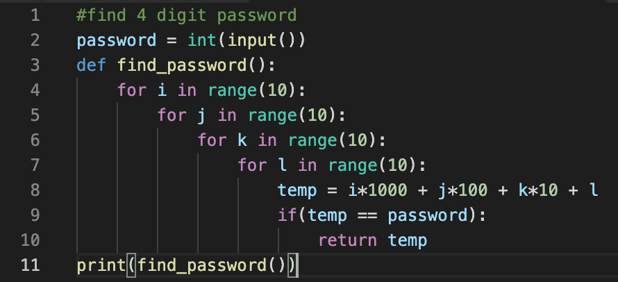
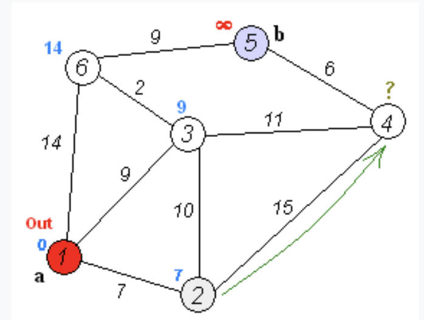
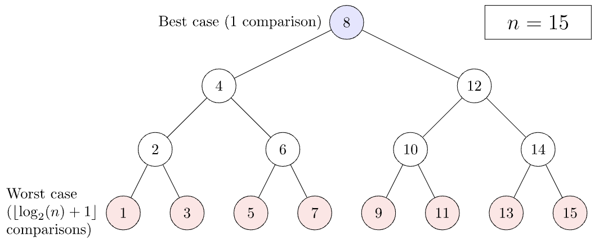
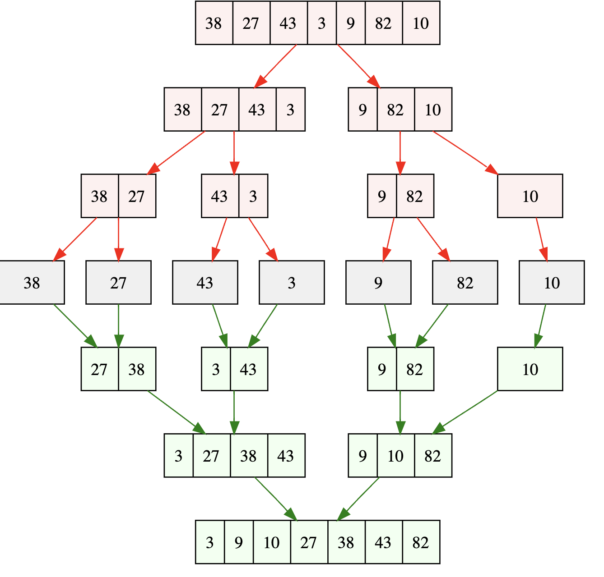
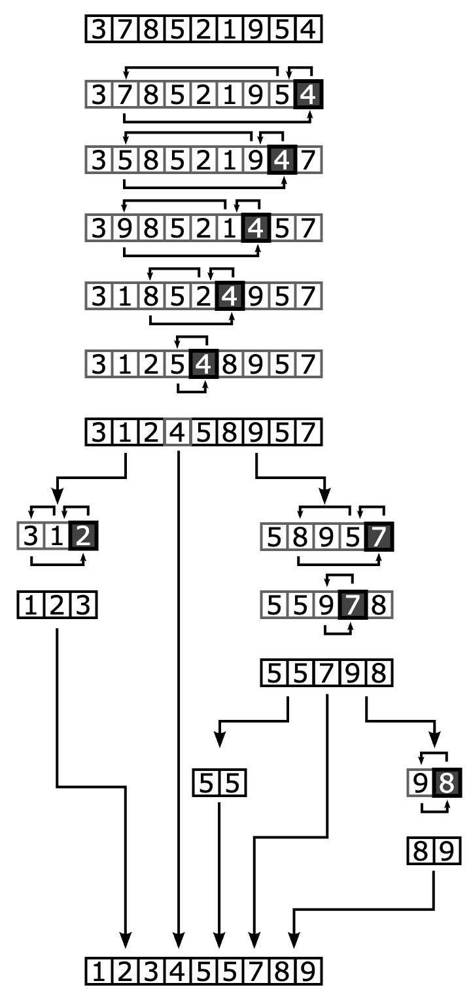

is an algorithm for traversing a tree. It starts traversing from the root node and explores as far as possible along each branch before backtracking. Usually uses stack to find the shortest path. In general, DFS is faster than BFS.
Time complexity: O(V+E)

is an algorithm for searching a tree. It starts traversing from the root node and explores all nodes at the present depth prior to moving on to the nodes at the next depth level. Extra memory, usually a queue, is needed to keep track of the child nodes that were encountered but not yet explored. It is usually a better option when target is closer to source.
Time complexity: O(V+E)

is a method used to find all the prime numbers up to a limit number(N). It adds all the numbers in a range as a prime number. Starting from smallest prime number, 2, it removes multiple of each prime number(i). When i reaches sqrt(N) or bigger, all the numbers remaining are defined as prime number.
Time complexity: O(N log (log N))

is a problem-solving technique that enumerates all the possible candidates for the solution. It checks each candidate if it satisfies problem's requirements. In general, Brute-force is easy to implement, but becomes inefficient as the number of possible candidates increases
Time complexity: O(mn)
is a problem-solving algorithm that recursively goes through candidates and returns to initial position if the candidate do not satisfy the condition.

is a graph search algorithm that solves the single-source shortest path problem. It works by visiting the unvisited node with the lowest path cost and updating path costs of its neighbors. It works for both directed and undirected graphs with non-negative edge weights.
Time complexity: O(V^2) or O(V + E log V)

is a search algorithm that finds the position of a target value within a sorted array. It compares the middle element of the array with the target value and narrows down the search range by half until the target value is found or the range is empty.
Time complexity: O(log N)

is a divide-and-conquer sorting algorithm that works by recursively dividing the array into two halves, sorting them, and then merging the sorted halves back together. It is a stable sort and has a worst-case time complexity of O(N log N).
Time complexity: O(N log N)

is a divide-and-conquer sorting algorithm that works by selecting a 'pivot' element from the array and partitioning the other elements into two groups, according to whether they are less than or greater than the pivot. The sub-arrays are then sorted recursively. In average cases, it has a time complexity of O(N log N), but it can degrade to O(N^2) in the worst case.
Time complexity: O(N log N) (average), O(N^2) (worst)
is an algorithm for traversing a tree. It starts traversing from the root node and explores as far as possible along each branch before backtracking. Usually uses stack to find the shortest path. In general, DFS is faster than BFS.
Time complexity: O(V+E)
is an algorithm for traversing a tree. It starts traversing from the root node and explores as far as possible along each branch before backtracking. Usually uses stack to find the shortest path. In general, DFS is faster than BFS.
Time complexity: O(V+E)
is an algorithm for traversing a tree. It starts traversing from the root node and explores as far as possible along each branch before backtracking. Usually uses stack to find the shortest path. In general, DFS is faster than BFS.
Time complexity: O(V+E)
is an algorithm for traversing a tree. It starts traversing from the root node and explores as far as possible along each branch before backtracking. Usually uses stack to find the shortest path. In general, DFS is faster than BFS.
Time complexity: O(V+E)

is an algorithm that solves the Stable Marriage Problem. It involves an equal number of men and women; each man ranks all the women in order of preference and vice versa. The algorithm reaches a stable state where no man and woman who are not married to each other would both prefer each other over their current partners.
Time complexity: O(n^2)

is a greedy algorithm that finds a minimum spanning tree for a weighted undirected graph. It works by building the tree one vertex at a time, from an arbitrary starting vertex, at each step adding the cheapest possible connection from the tree to another vertex.
Time complexity: O(E log V)

is a greedy algorithm that finds a minimum spanning tree in an undirected, connected and weighted graph. It works by sorting all the edges from low weight to high and adding them to the spanning tree in order, ignoring those edges that would form a cycle.
Time complexity: O(E log E)